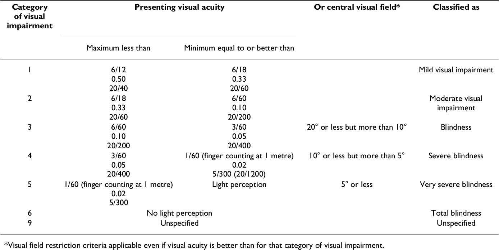

17. Hoofdstuk 17 | Ziekten van het zenuwstelsel en de zintuigen¶
This is a title
Ziekten van het zenuwstelsel zijn geclassificeerd in hoofdstuk 6, ziekten van het zenuwstelsel (G00-G99), van ICD-10-CM.
Ziekten van het oog en de adnexen zijn geclassificeerd in hoofdstuk 7, ziekten van het oog en de adnexen (H00-H59), van ICD-10-CM.
Ziekten van het oor en de processus mastoideus zijn geclassificeerd in hoofdstuk 8, ziekten van het oor en de processus mastoideus (H60-H95), van ICD-10-CM.
Een dubbele codering is vaak nodig voor infectieziekten van het centrale zenuwstelsel.
Pijn kan worden gecodeerd op basis van de gedocumenteerde locatie van de pijn.
Codes voor pijn, niet elders geclassificeerd (G89), kunnen worden gebruikt voor het coderen van pijnbestrijding of -beheersing.
Als de oorzaak van de pijn gedocumenteerd is, maar deze is niet behandeld tijdens de opname, dan wordt de oorzaak als een nevendiagnose gecodeerd.
Aanvallen kunnen veroorzaakt worden door een verscheidenheid van aandoeningen, naast epilepsie, en moeten overeenkomstig de onderliggende aandoening gecodeerd worden.
Andere aandoeningen van het centraal zenuwstelsel die in dit hoofdstuk van het handboek worden behandeld, zijn hemiplegie, de ziekte van Parkinson, autonome dysreflexie, en narcolepsie.
Veel problemen van het perifere zenuwstelsel zijn manifestaties van andere aandoeningen.
Deze problemen worden als nevendiagnosen gecodeerd.
Critical illness polyneuropathie en Critical illness myopathie, bijvoorbeeld, zijn complicaties van sepsis.
Een goed begrip van de terminologie en de documentatie in het patiëntendossier met betrekking tot oogziekten, is belangrijk voor een correcte codering.
Oogziekten en -aandoeningen die in dit handboek behandeld worden, omvatten cornealetsels (zowel door licht als door verwondingen), conjunctivitis, cataract, en glaucoom.
Gehoorverlies kan gecodeerd worden als conductief, sensorineuraal, of een combinatie van de twee.
Doelstellingen
Dit hoofdstuk heeft als doel:
Het verschil uitleggen tussen het centrale en perifere zenuwstelsel en de twee gebieden in ICD-10-CM lokaliseren.
Uitleggen hoe pijn gecodeerd moet worden.
Uitleggen onder welke voorwaarden epilepsie mag worden gecodeerd.
De codering van een verscheidenheid aan aandoeningen van het zenuwstelsel uitleggen.
De codering van oog- en ooraandoeningen uitleggen.
17.1. Inleiding¶
Ziekten van het zenuwstelsel zijn geclassificeerd in hoofdstuk 6, ziekten van het zenuwstelsel (G00-G99), van ICD-10-CM.
Ziekten van het oog en de adnexen zijn geclassificeerd in hoofdstuk 7, ziekten van het oog en de adnexen (H00-H59), van ICD-10-CM.
Ziekten van het oor en de processus mastoideus zijn geclassificeerd in hoofdstuk 8, ziekten van het oor en de processus mastoideus (H60-H95), van ICD-10-CM.
Omdat het zenuwstelsel complex is en moeilijk te begrijpen, kan het helpen om het coderingsproces te vereenvoudigen door het te zien als een systeem met twee niveaus:
| Codes | Omschrijving |
|---|---|
| G00-G47G80- G99 | Centraal zenuwstelsel (hersenen en ruggenmerg) |
| G50-G73 | Perifeer zenuwstelsel (alle andere neurale elementen in de rest van het lichaam) |
Cerebrale degeneratie, ziekte van Parkinson, en meningitis zijn aandoeningen van het centrale zenuwstelsel.
Polyneuropathie, myasthenia gravis, en spierdystrofieën zijn aandoeningen van het perifere zenuwstelsel.
Het perifere zenuwstelsel omvat het autonome zenuwstelsel, dat de activiteit van de hartspier, de gladde spieren en de klieren regelt.
17.2. Inflammatoire ziekten van het centraal zenuwstelsel¶
Inflammatoire ziekten van het centraal zenuwstelsel omvatten meningitis en encefalitis. De etiologie van dergelijke aandoeningen kan infectieus of niet-infectieus zijn.
Infectieziekten van het centraal zenuwstelsel worden op verschillende manieren gecodeerd, en het is absoluut noodzakelijk om de instructies in de alfabetische index en de systematische lijst zorgvuldig te volgen.
Codering
Een dubbele codering kan vereist zijn, waarbij eerst de code voor de onderliggende aandoening wordt gecodeerd en daarna de code voor de manifestatie.
Bijvoorbeeld, meningitis ten gevolge van poliovirus wordt gecodeerd met A80.9, acute poliomyelitis, niet gespecificeerd, met een manifestatiecode van G02, meningitis bij andere infectie- en parasitaire ziekten, elders geclassificeerd.
Bacteriële meningitis door bepaalde organismen zoals pneumokokken, streptokokken en stafylokokken wordt gecodeerd met codes uit categorie G00, met een vierde karakter dat het verantwoordelijke organisme aangeeft. Voor de codes G00.2, G00.3 en G00.8 is ook een extra code nodig om het organisme nader te specificeren.
Er moet zorgvuldig worden nagegaan of de aandoening moet worden gecodeerd met codes uit het hoofdstuk betreffende het zenuwstelsel, of dat er combinatiecodes zijn in het hoofdstuk betreffende infectieziekten die zowel de aandoening als het infectueuze organisme omvatten.
17.3. Ziekte van Parkinson¶
Codering
De ziekte van Parkinson wordt gecodeerd met code G20 en omvat primair parkinsonisme.
Secundair parkinsonisme (G21.-):
kan een bijwerking zijn van het therapeutisch gebruik van geneesmiddelen, in welk geval eerst een code uit categorie G21.- (bv. G21.0, G21.11, G21.19) wordt gecodeerd, gevolgd door code T43.3X5-, T43.4X5-, T43.505-, T43.595-, of een code uit T36-T50 met vijfde of zesde karakter gelijk aan 5 als additionele code om het verantwoordelijke geneesmiddel te identificeren.
kan ook postencefalitisch (G21.3), vasculair (G21.4), ander (G21.8), of niet gespecificeerd (G21.9) zijn.
De ziekte van Parkinson wordt soms veroorzaakt door syfilis; in dat geval wordt zij gecodeerd met A52.19, andere symptomatische neurosyfilis.
Voor de ziekte van Parkinson met dementie wordt code G20, ziekte van Parkinson, toegekend, gevolgd door code F02.80, dementie bij andere ziekten, elders geclassificeerd, zonder gedragsstoornissen.
17.4. Ziekte van Alzheimer¶
De ziekte van Alzheimer wordt gecodeerd met codes uit categorie G30.
Codering
Opgelet
Dementie is een inherent onderdeel van de ziekte van Alzheimer. De arts hoeft de aandoening niet afzonderlijk te documenteren voor een patiënt met de ziekte van Alzheimer.
Een code uit subcategorie F02.8-, dementie bij elders geclassificeerde aandoeningen, wordt gecodeerd als nevendiagnose volgens de instructies van de alfabetische index om de aan- of afwezigheid van gedragsstoornissen te specificeren.
17.5. Epilepsie¶
Attention
Er mag niet worden aangenomen dat elke diagnostische documentatie van convulsies of aanvallen als epilepsie kan worden gecodeerd; deze aandoeningen komen ook voor bij een aantal andere ziekten, zoals hersentumor, cerebrovasculair accident, alcoholisme, verstoring van het elctrolytenevenwicht en aandoeningen. gepaard gaande met koorts. Grand mal aanvallen, bijvoorbeeld, kunnen ook andere oorzaken hebben dan epilepsie. Er mag geen code voor epilepsie worden gecodeerd tenzij de arts de aandoening duidelijk als dusdanig documenteert in het patiëntendossier.
Wanneer de diagnose enkel wordt gedocumenteerd in termen van convulsie of aanval zonder verdere specificatie van de oorzaak, moet code R56.9, niet gespecificeerde convulsies, worden gecodeerd.
Wanneer de arts een voorgeschiedenis van een aanval documenteert in de anamnese, maar verder geen aanvallen documenteert in de diagnostische verklaring, mag de aanval niet worden gecodeerd, tenzij uit de documentatie blijkt dat aan de criteria voor het coderen van de aandoening is voldaan en uit de documentatie blijkt dat de arts ermee instemt dat de aandoening wordt gecodeerd.
Merk op…
De ICD-10-CM index de term Epilepsy toewijst aan code G40.909, terwijl de term Seizure(s) wordt toegewezen aan code R56.9.
Codering
Voor subcategorie G40, epilepsie en terugkerende aanvallen, voorziet ICD- 10-CM in:
een vijfde karakter die de specificatie van epilepsie als refractair mogelijk maakt wanneer de arts dit zo documenteert.
Termen als pharmacoresistent (farmacologisch resistent), slecht onder controle en therapieresistent worden daarbij beschouwd als equivalent van refractair.
Dat de aandoening refractair is, mag niet worden afgeleid uit algemene verklaringen in de documentatie van het patiëntendossier.
een zesde karakter om aan te geven of er sprake is van status epilepticus.
17.6. Hoofdpijn en migraine¶
Een diagnose van hoofdpijn zonder verdere specificatie wordt geclassificeerd in hoofdstuk 18, symptomen, tekens en abnormale klinische en laboratoriumbevindingen, niet elders geclassificeerd (R00-R99), van de ICD-10-CM en gecodeerd met R51.9, hoofdpijn, niet gespecificeerd.
Status migrainosus verwijst in het algemeen naar een ernstige migraineaanval die langer dan 72 uur duurt. De term status migrainosus dient echter te worden gedocumenteerd door de arts.
Codering
Migraine wordt geclassificeerd in categorie G43, migraine
G43.0- Migraine zonder aura
G43.1- Migraine met aura
G43.4- Hemiplegische migraine
G43.5- Persisterende migraine met aura, zonder cerebraal infarct
G43.6- Persisterende migraine met aura, met cerebraal infarct
G43.7- Chronische migraine zonder aura
G43.A- Cyclisch braken
G43.B- Ophthalmoplegische migraine
G43.C- Periodieke hoofdpijnsyndromen bij kind of volwassene
G43.D- Abdominale migraine
G43.8- Overige migraine
G43.9- Migraine, niet gespecificeerd
Specifieke hoofdpijn wordt geclassificeerd in categorie G44, overige hoofdpijnsyndromen.
G44.0- Clusterhoofdpijn en andere autonome trigeminuscefalgieën
G44.1 Vasculaire hoofdpijn, niet elders geclassificeerd
G44.2- Spanningshoofdpijn
G44.3- Posttraumatische hoofdpijn
G44.4- Door geneesmiddelen veroorzaakte hoofdpijn, niet elders geclassificeerd
G44.5- Gecompliceerde hoofdpijnsyndromen
G44.8- Overige specifieke hoofdpijnsyndromen
Hoofdpijn na een lumbaalpunctie wordt gecodeerd met code G97.1, andere reactie op een spinale of een lumbaalpunctie.
17.7. Narcolepsie¶
Codering
ICD-10-CM maakt onderscheid tussen volgende subcategorieën van narcolepsie:
17.8. Hemiplegie en hemiparesie¶
Hemiplegie wordt geclassificeerd in categorie G81, hemiplegie en hemiparese, met een vijfde karakter om de aangetaste zijde aan te geven en of de aangetaste zijde dominant of niet-dominant is.
Wanneer er geen documentatie beschikbaar is betreffende het dominant of niet-dominant karakter van de aangetaste zijde, en wanneer de classificatie geen standaardwaarde voorziet, gebeurt de codering als volgt:
In geval van ambidextrie moet de standaardwaarde dominant zijn.
In geval van aantasting van de linkerzijde, is de standaardwaarde niet-dominant.
In geval van aantasting van de rechterzijde, is de standaardwaarde dominant.
Deze richtlijn is van toepassing op:
codes uit categorie G81, hemiplegie en hemiparese
codes uit de subcategorie G83.1, monoplegie van het onderste lidmaat
codes uit de subcategorie G83.2, monoplegie van het bovenste lidmaat
codes uit de subcategorie G83.3, monoplegie, niet gespecificeerd.
Opgelet
Hemiplegie maakt geen integraal deel uit van een acuut CVA. Daarom wordt een code uit categorie G81, hemiplegie en hemiparese, als nevendiagnose gecodeerd wanneer deze zich voordoet. Zelfs als hemiplegie geassocieerd met CVA verdwijnt zonder behandeling, heeft het invloed op de verzorging van de patiënt. Alle neurologische stoornissen veroorzaakt door CVA moeten worden gedocumenteerd en gecodeerd, zelfs als ze bij ontslag zijn verdwenen.
Merk op…
Unilateraal krachtverlies:
Unilaterale zwakte, of krachtverlies, duidelijk gedocumenteerd als geassocieerd met een CVA, is synoniem met hemiparese en hemiplegie.
Krachtverlies van één extremiteit geassocieerd met een CVA is synoniem met monoplegie.
Krachtverlies buiten deze duidelijke associatie kan niet worden verondersteld hemiparese/hemiplegie of monoplegie te zijn, tenzij hetwordt geassocieerd met een andere hersenaandoening of -letsel.
Wanneer de patiënt op een later tijdstip wordt opgenomen met hemiplegie/ hemiparese of zwakte van één extremiteit (bovenste of onderste) als gevolg van een cerebrovasculaire aandoening, wordt een code uit categorie I69, sequelae van cerebrovasculaire ziekte gecodeerd om aan te geven dat de aandoening een laat gevolg is van een CVA.
Voorbeelden
I66.9 + G81.91 Cerebrale trombose met voorbijgaande hemiplegie rechts, die bij ontslag is verdwenen
I66.9 + G81.91 Cerebrale trombose met hemiplegie van rechter dominante zijde
I69.352 Hemiplegie van linkse dominante zijde als gevolg van eerdere CVA
G81.90 + S34.109S Hemiparese als gevolg van oude lumbale dwarslaesie
17.9. Pijn¶
Pijn wordt gecodeerd op basis van de locatie van de pijn. Codes voor de plaats van de pijn kunnen worden gevonden:
in hoofdstuk 18, symptomen, tekens en abnormale klinische en laboratoriumbevindingen, niet elders geclassificeerd (R00-R99), van ICD-10-CM.
Bijvoorbeeld, R51.9, hoofdpijn.
in het hoofdstuk over het betreffende lichaamsstelsel van ICD-10- CM.
Bijvoorbeeld M79.609, pijn in niet gespecificeerd lidmaat.
De bepaling of pijn acuut of chronisch van karakter is of een chronisch pijnsyndroom is, is afhankelijk van de documentatie van de arts. Er is geen tijdsbestek dat bepaalt wanneer pijn chronisch wordt.
Tenzij hieronder anders aangegeven, kunnen codes uit categorie G89, pijn, niet elders geclassificeerd, worden gebruikt in combinatie met de codes voor de locatie van de pijn als de code uit categorie G89 meer details geeft over acute of chronische pijn en neoplasmagerelateerde pijn.
Als pijn niet wordt gespecificeerd als acuut of chronisch, postthoracotomie, postproceduraal of neoplasma-gerelateerd, dan kunnen geen codes uit categorie G89 gecodeerd worden.
Als de onderliggende diagnose bekend is, dan mag geen code uit categorie G89 gecodeerd worden, tenzij de reden van opname pijncontrole/-behandeling is en niet behandeling van de onderliggende aandoening.
Wanneer de reden van opname een procedure betreft die gericht is op de behandeling van de onderliggende aandoening, zoals een spinale fusie voor de behandeling van pijn in verband met een wervelfractuur, dan moet een code voor de onderliggende aandoening (bv. wervelfractuur) worden gecodeerd als hoofddiagnose. Er mag geen code uit categorie G89 worden gecodeerd.
17.9.1. Opnames bestemd voor pijncontrole en -beheersing¶
Categorie G89-codes kunnen als hoofddiagnose worden gecodeerd wanneer pijncontrole of pijnbeheersing de reden voor de opname is. Deze opnames zijn gewoonlijk niet bedoeld voor diagnostisch bilan of behandeling van de onderliggende aandoening, maar voor pijnbestrijding. In deze situaties, als de onderliggende oorzaak van de pijn bekend is, wordt deze gecodeerd als een nevendiagnose.
Voorbeeld
Een patiënt met een verschoven tussenwervelschijf, zenuwimpingement en ernstige rugpijn, wordt opgenomen voor injectie van steroïden in het wervelkanaal. De injectie is bedoeld om de pijn te verlichten, maar de verschoven tussenwervelschijf wordt er niet mee behandeld.
Indien de reden van opname de bestrijding is van pijn die verband houdt met, geassocieerd is met of te wijten is aan een maligniteit, moet code G89.3, aan neoplasma gerelateerde pijn (acuut) (chronisch), worden gecodeerd. Het onderliggend neoplasma wordt gecodeerd als een nevendiagnose. Omdat de code voor het neoplasma informatie bevat over de specifieke locatie, moet geen extra code voor de locatie van de pijn worden gecodeerd. Wanneer de reden voor de opname de behandeling van het neoplasma is en de pijn in verband met het neoplasma ook is gedocumenteerd, kan code G89.3 als nevendiagnose worden gecodeerd. Een bijkomende code voor de plaats van de pijn mag niet gecodeerd worden.
Indien de reden van opname een procedure is om een onderliggende aandoening te behandelen, moet de onderliggende aandoening als hoofddiagnose worden gecodeerd.
Voorbeeld
Indien een patiënt wordt opgenomen voor een spinale fusie om lumbale spinale stenose met neurogene claudicatie te behandelen, dan wordt code M48.062, spinale stenose, lumbaal gebied, met neurogene claudicatie, als hoofddiagnose gecodeerd. Er mag geen code uit categorie G89 worden gecodeerd.
Patiënten met chronische pijn bij wie conservatieve therapieën geen hulp bieden, kunnen neurostimulatoren laten inbrengen voor pijnbestrijding. In dergelijke gevallen wordt de juiste pijncode als hoofddiagnose gecodeerd. Wanneer de reden van opname een procedure is gericht op de behandeling van de onderliggende aandoening en tijdens dezelfde opname een neurostimulator wordt geplaatst voor pijnbestrijding, moet een code voor de onderliggende aandoening als hoofddiagnose worden gecodeerd met de pijncode als nevendiagnose.
Als de reden van opname een andere reden is dan pijnbestrijding of pijnbeheersing en een gerelateerde, definitieve diagnose voor de pijn niet is vastgesteld (bevestigd) door de arts, moet eerst de code voor de specifieke plaats van de pijn worden gecodeerd, gevolgd door de juiste code uit categorie G89. Als de definitieve diagnose wel is vastgesteld, moet de code voor de definitieve diagnose worden gecodeerd.
17.9.2. Postoperatieve pijn¶
Opgelet
Routinematige of verwachte postoperatieve pijn onmiddellijk na de operatie mag niet worden gecodeerd.
Post-thoracotomiepijn en andere postoperatieve pijn worden geclassificeerd in de subcategorieën G89.1 en G89.2, afhankelijk van het feit of de pijn acuut of chronisch is. De standaard voor post-thoracotomie en andere postoperatieve pijn, die niet als acuut of chronisch is gespecificeerd, is de code voor de acute vorm.
Postoperatieve pijn in verband met een specifieke postoperatieve complicatie (zoals pijnlijke draadhechtingen) of in verband met apparaten, implantaten of transplantaten die op een operatieplaats zijn achtergebleven (zoals een pijnlijke heupprothese) wordt gecodeerd met de juiste code(s) in hoofdstuk 19, letsel, vergiftiging, en bepaalde andere gevolgen van externe oorzaken (S00-T88), van ICD-10-CM. Een code uit categorie G89 wordt gecodeerd als nevendiagnose om acute of chronische pijn aan te geven (G89.18 ou G89.28).
Postoperatieve pijn mag als hoofddiagnose worden gecodeerd wanneer de reden voor opname postoperatieve pijnbestrijding/-behandeling is.
17.10. Autonome dysreflexie¶
Code G90.4, autonome dysreflexie, wordt gebruikt om deze aandoening te melden.
Elke manifestatie of elk symptoom wordt niet apart gecodeerd.
Hoewel in de meeste scenario’s van dubbele codering de onderliggende aandoening als eerste wordt gecodeerd, wordt in dit geval de dysreflexie als hoofddiagnose gecodeerd, gevolgd door een code voor de onderliggende chronische aandoening die deze levensbedreigende aandoening heeft uitgelokt (bv. decubitus, fecale impactie, urineweginfectie).
17.11. Hydrocefalie¶
Code G91.0, communicerende hydrocefalie, wordt gecodeerd in het geval van secundaire normale druk hydrocefalie (NPH).
Code G91.1, obstructieve hydrocefalie, wordt gecodeerd bij deze verworven aandoening.
Idiopathische normale druk hydrocefalie (INPH) kan voorkomen zonder aanwijsbare oorzaak. Code G91.2, (Idiopathische) normale druk hydrocefalie, wordt gecodeerd bij dit type verworven hydrocefalie.
Als de documentatie in het patiëntendossier niet specificeert of de hydrocefalie congenitaal of verworven is, moet code G91.9 hydrocefalie, niet gespecificeerd, worden gecodeerd.
17.12. Encefalopatie¶
Codering
Codering van enkele van de meest voorkomende encefalopathieën:
Anoxische encefalopathie verwijst naar hersenbeschadiging door gebrek aan zuurstof. Dit type encefalopathie wordt gecodeerd met G93.1, anoxische hersenbeschadiging, niet elders geclassificeerd.
Alcoholische encefalopathie wordt gecodeerd met G31.2, degeneratie van het zenuwstelsel ten gevolge van alcohol.
Hepatische encefalopathie is hersenbeschadiging als gevolg van een leveraandoening, en wordt gecodeerd met code K72.90, leverfalen, niet gespecificeerd, zonder coma, wanneer de etiologie niet is gespecificeerd of onbekend is. Bij de indexvermelding Failure, hepatic zijn er subvermeldingen voor codes die specifiek verschillende etiologieën beschrijven en voor leverfalen met of zonder coma. Hepatische encefalopathie is niet synoniem met levercoma. De standaardcode voor leverfalen is zonder coma (K72.90).
Metabole encefalopathie wordt gecodeerd met code G93.41, metabole encefalopathie. Code G93.41 includeert ook septische encefalopathie.
Toxische encefalopathie is ook bekend als toxische metabole encefalopathie. ICD-10-CM classificeert deze aandoening onder code G92, toxische encefalopathie. De codering van toxische encefalopathie ten gevolge van geneesmiddelen is gebaseerd op de vraag of de toxiciteit van het geneesmiddel als een bijwerking of als een vergiftiging moet worden beschouwd.
Bij het coderen van een bijwerking van een geneesmiddel dat correct werd voorgeschreven en correct werd toegediend, wordt de aard van de bijwerking gecodeerd, gevolgd door de juiste code voor de bijwerking van het geneesmiddel (T36-T50). De code voor het geneesmiddel moet een vijfde of zesde karakter gelijk aan 5 krijgen (bv. T36.0x5-) om de bijwerking aan te duiden.
Indien de toxische encefalopathie te wijten is aan een vergiftiging door een toxisch agens, wordt eerst een code uit de categorieën T51-T65 gecodeerd om het oorzakelijk toxisch agens te identificeren.
Encefalopathie van Werknicke wordt gecodeerd met code E51.2,Wernicke’s encefalopathie.
Encefalopathie geassocieerd met cerebrovasculair accident en beroerte maakt geen integraal onderdeel uit van deze aandoeningen. Code G93.49, andere encefalopathie, wordt gecodeerd naast de codes voor cerebrovasculair accident en beroerte.
Code G93.49, andere encefalopathie, wordt gecodeerd wanneer de encefalopathie geassocieerd is met een aandoening (bv. encefalopathie ten gevolge van urineweginfectie) maar een specifieke encefalopathie (bv. metabool, toxisch of hypertensief) niet is gedocumenteerd.
Niet-gespecificeerde encefalopathie wordt gecodeerd met code G93.40, encefalopathie, niet gespecificeerd.
Code G94, andere hersenaandoeningen bij elders geclassificeerde ziekten, mag alleen worden gecodeerd voor die aandoeningen met alfabetische indexvermeldingen die direct naar G94 verwijzen voor bepaalde etiologieën.
17.13. Stoornissen van het perifeer zenuwstelsel¶
Stoornissen van het perifere zenuwstelsel worden ingedeeld in de categorieën G50 tot G73 in functie van de aandoening en de betrokken zenuwen.
Veel codes in deze rubriek zijn manifestaties van andere ziekten en worden als nevendiagnose gecodeerd waarbij de onderliggende aandoening als hoofddiagnose wordt gecodeerd.
17.14. Critical Illness Polyneuropathy¶
Synoniemen voor Critical illness polyneuropathy zijn Critical illness neuropathy, intensive care neuropathie en intensive care polyneuropathie.
Critical illness polyneuropathy wordt gecodeerd met code G62.81, Critical illness polyneuropathy.
17.15. Critical illness myopathy¶
Critical illness myopathie wordt in verband gebracht met sepsis, het gebruik van neuromusculaire blokkers en corticosteroïden (bij astmapatiënten en orgaantransplantatie astmapatiënten en orgaantransplantatiepatiënten), en neuropathie. Het kan leiden tot moeilijkheden bij het ontwennen van patiënten van mechanische beademing en tot een langere herstelperiode na ziekte.
Critical illness myopathie wordt gecodeerd met code G72.81, critical care myopathie.
17.16. Cerebrospinaal vloeistoflek¶
Codering
Een spontaan cerebrospinaal vloeistoflek, dat zonder bekende reden optreedt, wordt gecodeerd met code G96.01 (craniaal) of G96.02 (spinaal).
Een ander cerebrospinaal vloeistoflek wordt gecodeerd met code G96.08 (craniaal) of G96.09 (spinaal).
Een niet gespecificeerd cerebrospinaal vloeistoflek wordt gecodeerd met code G96.00.
17.17. Intracraniële hypotensie¶
Codering
Spontane intracraniële hypotensie wordt gecodeerd met code G96.811.
Andere intracraniële hypotensie wordt gecodeerd met code G96.819.
Niet gespecificeerde intracraniële hypotensie wordt gecodeerd met code G96.810.
Intracraniële hypotensie als gevolg van een procedure wordt gecodeerd met een toepasselijke code uit subcategorie G97.8, overige intraoperatieve en postprocedurele complicaties en aandoeningen van het zenuwstelsel.
Intracraniële hypotensie ten gevolge van shunting, wordt gecodeerd met code G97.83, intracraniële hypotensie na lumbale cerebrospinale vloeistofshunting.
Intracraniële hypotensie ten gevolge van een andere procedure wordt gecodeerd met code G97.84, intracraniële hypotensie na andere procedure.
17.18. Ziekten van het oog en de adnexen¶
Attention
De classificatie voor oogziekten is zeer gedetailleerd, en het begrijpen van de gebruikte terminologie is bijzonder belangrijk voor de codering. Termen die op elkaar lijken, kunnen een heel andere betekenis hebben. Een goed begrip van de diagnostische documentatie in het patiëntendossier is noodzakelijk alvorens te coderen.
Visusstoornissen (H54) worden geclassificeerd volgens ernst, waarbij de status van het slechtste oog eerst wordt vermeld en het beste oog als tweede in de codetitel. Indien de onderliggende oorzaak van de blindheid of het gezichtsverlies bekend is, moet deze eerst worden gecodeerd.
ICD-10-CM bevat een tabel (zie hieronder) met de door een studiegroep van de Wereldgezondheidsorganisatie aanbevolen classificatie van de ernst van de visusstoornis.
De term slechtziendheid in categorie H54 komt overeen met de categorieën 1 en 2 van de tabel ; de term blindheid met de categorieën 3, 4, en 5; en de term niet gespecificeerd gezichtsverlies met categorie 9.
Voorbeelden
De informatie uit bovenstaande tabel, is bedoeld om aanwijzingen te geven om mogelijke hiaten in de documentatie op te sporen waar navraag bij de arts nodig kan zijn. De informatie is niet bedoeld ter vervanging van de specifieke documentatie van de arts nodig ter onderbouwing van de codetoewijzing.
Documentatie en codering
Code H54.3, niet gespecificeerd verlies van gezichtsvermogen, beide ogen, wordt gecodeerd als blindheid of slechtziendheid van beide ogen is gedocumenteerd, maar de categorie van de visusstoornis niet is gedocumenteerd.
Een code uit subcategorie H54.6, niet gespecificeerd verlies van gezichtsvermogen, één oog, wordt gecodeerd indien blindheid of slechtziendheid aan één oog is gedocumenteerd, maar de categorie van de visusstoornis niet is gedocumenteerd.
De code H54.7, niet gespecificeerd verlies van gezichtsvermogen, wordt gecodeerd als blindheid of slechtziendheid is gedocumenteerd maar de informatie over of één of beide ogen zijn aangetast, is niet gedocumenteerd.
Soms kunnen visuele problemen kantelen van het hoofd veroorzaken, wat resulteert in oculaire torticollis of oculair geïnduceerde torticollis. Oculaire torticollis wordt gecodeerd door eerst de juiste code te coderen voor de oculaire aandoening die de torticollis veroorzaakt, bijvoorbeeld nystagmus (H55.-), strabismus (H50.9), of verlamming van de vierde hersenzenuw (H49.1-), gevolgd door code R29.891, oculaire torticollis.
17.18.1. Letsels van de cornea¶
Een code uit de subcategorie H16.13-, fotokeratitis, wordt gecodeerd bij een flitsbrandwonde van de cornea, algemeen aangeduid als ultraviolet keratitis.
Het betreft altijd een letsel, en de juiste code voor externe oorzaak van morbiditeit moet worden toegewezen als een extra code, zoals codes uit categorie W89, blootstelling aan kunstmatig zichtbaar en ultraviolet licht, of X32.-, blootstelling aan zonlicht.
Codering
Laceraties van cornea en/of sclera worden geclassificeerd in categorie S05, letsel van oog en oogkas.
Een vierde karakter wordt gebruikt om aan te geven of er sprake is van:
contusie van oogbol en orbitale weefsels
prolaps of verlies van intraoculair weefsel
penetrerende verwonding
een vreemd voorwerp
avulsie van het oog
associatie met andere aandoeningen
Een vijfde karakter wordt gebruikt om aan te geven of het gaat om niet nader gespecificeerde oog, het rechteroog of het linkeroog.
Een code voor externe oorzaken van morbiditeit wordt gecodeerd om de externe oorzaak aan te duiden.
17.18.2. Conjunctivitis¶
Conjunctivitis is geclassificeerd in categorie H10, conjunctivitis, van ICD-10-CM.
Chronische giant papillary conjunctivitis is ingedeeld in subcategorie H10.41-.
Vernale conjunctivitis (H10.44) is het gevolg van een allergische reactie op pollen.
Wanneer de oorzaak van acute conjunctivitis een chemisch of toxisch agens is, wordt code H10.21- gebruikt, waarbij eerst een code uit de categorieën T51-T65 wordt gecodeerd om het chemische agens en de intentie (bv. accidenteel, aanval) te identificeren.
Conjunctivitis als gevolg van chlamydia wordt geclassificeerd onder A74.0 of onder A71.1 wanneer deze wordt aangeduid als het gevolg van trachoom.
Conjunctivochalasis wordt gecodeerd met code H11.82-.
Code H04.12-, drogeogensyndroom wordt door de index aangeduid voor drogeogensyndroom, een aandoening van de traanklier.
Code H04.12- is echter niet geschikt voor de codering van het droge oog in verband met Bell’s palsy, waarbij de lacrimale klier niet betrokken is, maar die het gevolg is van blootstelling aan de lucht als gevolg van het onvermogen om het oog te sluiten als gevolg van de acute ernstige aangezichtsverlamming die gepaard gaat met Bell’s palsy. Code H16.21-, keratoconjunctivitis door blootstelling aan de lucht, wordt gecodeerd voor droge ogen die verband houden met Bell’s palsy.
17.18.3. Corneadystrofie¶
Corneadystrofieën worden ingedeeld op basis van de klinische presentatie van het letsel (lijkend op het overlappend patroon van een rooster) en de laag van de cornea die door het letsel is aangetast. Een zevende karakter voor aanduiding van de lateraliteit is beschikbaar bij verscheidene subcategorieën van corneale dystrofie.
17.18.4. Cataract¶
Opgelet
Bij het coderen van cataract moet vermeden worden aannames te maken over het type cataract op basis van de leeftijd van de patiënt of op basis van andere aandoeningen. Een cataract bij een oudere patiënt is niet noodzakelijk seniel of matuur; de terminologie die in de documentatie van het patiëntendossier wordt gebruikt, is doorslaggevend.
ICD-10-CM veronderstelt een oorzakelijk verband tussen diabetes en cataract op basis van de koppeling in de alfabetische index door de subtermen with en in. Diabetes en cataract moeten als gerelateerde aandoeningen worden gecodeerd, ook als de arts geen documentatie voorziet waarin een expliciet verband tussen beide wordt gelegd.
Voorbeeld
Als bij een patiënt met diabetes ouderdomscataract of seniele cataract wordt gedocumenteerd, dan moet de catract worden gecodeerd als diabetische cataract.
17.18.5. Glaucoom¶
Glaucoom wordt geclassificeerd met codes uit categorie H40, glaucoom.
Codering
Er moeten zoveel codes uit categorie H40 gebruikt worden als nodig zijn om het type glaucoom, het aangetaste oog en het stadium te coderen.
het vierde en/of vijfde karakter wordt gebruikt om glaucoom volgens type te coderen.
het vijfde of zesde karakter kan in de meeste gevallen gebruikt worden om het aangetaste oog te coderen.
een zevende karakter is vereist voor codes in subcategorieën H40.1-, H40.20-, H40.22-, H40.3-, H40.4-, H40.5-, en H40.6- om het stadium (niet gespecificeerd, mild, matig, ernstig, of onbepaald) aan te duiden.
Het is mogelijk dat een patiënt bilateraal glaucoom heeft, waarbij elk oog van hetzelfde of verschillend type is, en hetzelfde of verschillend glaucoomstadium in elk oog. Er zijn specifieke richtlijnen opgesteld om de codering van deze situaties aan te pakken. De richtlijnen verschillen grotendeels op basis van het al dan niet onderscheiden van lateraliteit in de classificatie ; de subcategorieën H40.10- en H40.20- maken geen onderscheid naar lateraliteit, de andere subcategorieën wel.
Onderstaande tabel geeft een samenvatting van deze richtlijnen.
| Bilateraal glaucoom | Classificatie maakt onderscheid in lateraliteit | Classificatie maakt geen onderscheid in lateraliteit |
|---|---|---|
| Zelfde type -Zelfde stadium | Codering van één bilaterale code voor het type glaucoom, met het gepaste zevende karakter voor het stadium.Voorbeeld: H40.2231, chronisch geslotenkamerhoekglaucoom, bilateraal, mild stadium | Codering van één code voor het type glaucoom, met het gepaste zevende karakter voor het stadium.Voorbeeld: H40.10X1, bilateraal open hoek glaucoom, mild stadium |
| Zelfde type -Verschillend stadium | Codering van afzonderlijke codes voor het type glaucoom per oog, met het passende zevende karakter voor het specifieke stadium in plaats van één bilaterale code voor beide ogen samen.Voorbeeld: H40.2211 + H40.2222, bilateraal chronisch gesloten hoek glaucoom, mild stadium rechts, matig stadium links | Codering van afzonderlijke codes voor het type glaucoom per oog met het passende zevende karakter voor het specifieke stadium.Voorbeeld: H40.10X1 + H40.10X2, bilateraal open hoek glaucoom, mild stadium rechts, matig stadium links |
| Verschillend type -Zelfde stadium | Codering van gepaste code per oog in plaats van één bilaterale glaucoomcode voor beide ogen samen.Voorbeeld: H40.2221 + H40.1211, chronisch gesloten hoek glaucoom, mild stadium links, lage druk open hoek glaucoom, mild stadium rechts | Codering van het specifieke type glaucoom per oog met het gepaste zevende karakter voor het stadium.Exemple: H40.10X1 + H40.20X1, open hoek glaucoom, mild stadium rechts, primair gesloten hoek glaucoom, mild stadium links |
Wanneer een patiënt wordt opgenomen met glaucoom en het stadium van het glaucoom evolueert tijdens de opname, wordt alleen de code voor het hoogst gedocumenteerde stadium gecodeerd.
Opgelet
Een glaucoom waarvan het stadium niet gespecificeerd of niet gedocumenteerd is (zevende teken 0) is niet hetzelfde als een glaucoom waarvan het stadium als onbepaald is gedocumenteerd (zevende teken 4). De toewijzing van het stadium onbepaald moet gebaseerd zijn op klinische documentatie en is voorbehouden aan glaucoom waarvan het stadium klinisch niet kan worden bepaald.
Codering
Categorie [H42, glaucoom bij elders geclassificeeerde ziekten], vereist dat de onderliggende aandoening eerst wordt gecodeerd, zoals amyloïdose (E85.-), aniridie (Q13.1), of een gespecificeerde stofwisselingsstoornis (E70-E88).
Glaucoom bij diabetes mellitus wordt gecodeerd volgens het type diabetes (E08-E13) met -.39.
Glaucoom bij syfilis wordt gecodeerd met code A52.71, late syfilitische oculopathie.
Tuberculeus glaucoom wordt gecodeerd met code A18.59, andere tuberculose van het oog.
Aqueous misdirection stond vroeger bekend als maligne glaucoom. Er is geen echte maligniteit geassocieerd met dit type glaucoom. Code H40.83-, verstoorde circulatie van het oogkamervocht, wordt gebruikt om deze aandoening te coderen.
17.19. Ziekten van het oor en de processus mastoïdeus¶
Hoofdstuk 8 van ICD-10-CM, ziekten van het oor en de processus mastoïdeus (H60-H95), omvat:
ziekten van het uitwendige oor (H60-H62)
ziekten van het middenoor en het mastoïd (H65-H75)
ziekten van het binnenoor (H80- H83)
andere ziekten van het oor (H90-H94)
intraoperatieve en postprocedurele complicaties en ziekten van het oor en de processus mastoïdeus, niet elders geclassificeerd (H95)
17.19.1. Otitis¶
ICD-10-CM classificeert otitis op basis van het feit of
het uitwendige oor of middenoor is aangetast
een plots optreden en gedurende korte tijd (acuut) of herhaaldelijk optreden gedurende een lange periode (chronisch)
Codering
Otitis wordt in volgende categorieën van ICD-10-CM geclassificeerd:
H60 Otitis externa
Categorie H60, otitis externa, voorziet in extra karakters voor verdere specificeren van de aandoening, zoals bijvoorbeeld infectieus en niet infectieus (chemisch, actinisch, reactief of eczematoïd).
H61 Andere aandoeningen van het uitwendige oor
H62 Aandoeningen van het uitwendige oor bij elders geclassificeerde ziekten
H65 Niet-suppuratieve otitis media
Categorie H65, niet-suppuratieve otitis media, is verder onderverdeeld om het acuut, subacuut of chronisch karakter te specificeren, of de sereuze, allergische of mucoïde vorm van otitis media.
H66 Soepelende en niet gespecificeerde otitis media
Categorie H66, suppuratieve en niet nader gespecificeerde otitis media, is verder onderverdeeld om aan te geven of de aandoening acuut of chronisch is en of er al dan niet sprake is van spontane ruptuur van het trommelvlies.
H67 Otitis media bij elders geclassificeerde ziekten
17.19.2. Doofheid en gehoorverlies¶
Gehoorverlies kan unilateraal of bilateraal zijn.
Codering
Gehoorverlies wordt in de meeste gevallen op een van de volgende drie manieren geclassificeerd:
Conductief gehoorverlies (H90.0-H90.2, H90.A11, en H90.A12), waarbij het gehoorverlies te wijten is aan een defect in het geleidingsapparaat van het oor (ook wel geleidingsdoofheid genoemd).
Sensorineuraal gehoorverlies (H90.3-H90.5, H90.A21, en H90.A22), waarbij het gehoorverlies te wijten is aan een defect in het sensorisch mechanisme van het oor of de zenuwen.
Gemengd conductief en sensorineuraal gehoorverlies (H90.6-H90.8, H90.A31, en H90.A32).
Codering
Andere classificaties van gehoorverlies houden verband met de onderliggende oorzaak, zoals de volgende:
Ototoxisch gehoorverlies (H91.0-) veroorzaakt door inname van toxische stoffen. Wanneer dit type gehoorverlies het gevolg is van vergiftiging, moet eerst een code uit T36-T65 met het vijfde of zesde karakter 1-4 of 6 worden toegekend. Een code uit T36-T50 met vijfde of zesde karakter 5 wordt als bijkomende code toegekend wanneer het gehoorverlies een bijwerking is.
Presbycusis (H91.1-), of leeftijdsgerelateerd gehoorverlies met geleidelijk toenemend onvermogen om te horen. Het wordt beschouwd als een sensorineuraal gehoorverlies.
Plots idiopathisch gehoorverlies (H91.2-), of plots, onverklaard gehoorverlies.